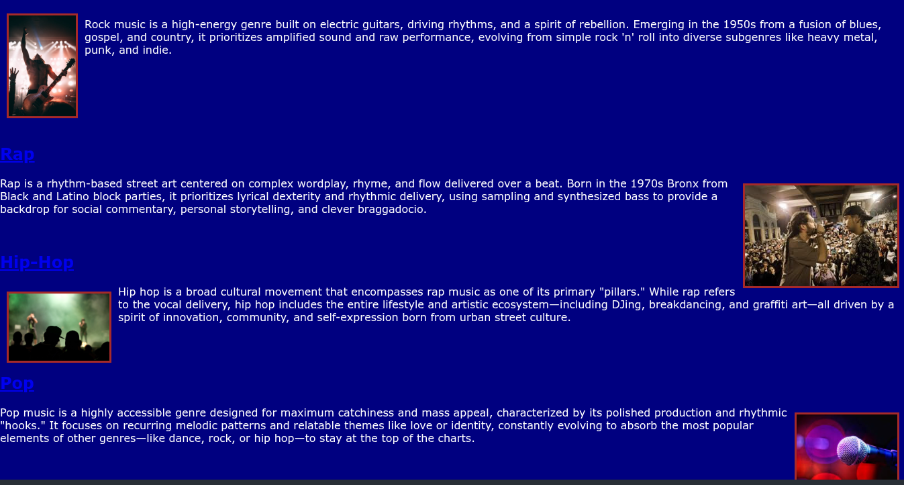

What I Made
This artifact is an informational website outlining different bands and music genres for people to listen to. This site was made in the web development unit with a partner and showcases multiple pages and css customization. .
Screenshot or Visual

Project Link
If your project has a public share link, add it here. Examples: Code.org, Replit, Canva, CodePen.
What This Was Supposed to Communicate
This website is intended to help people find what kind of music to listen to and gives you examples of different artists in various genres.
Who My Audience Was
Pretty much anyone who wants to try to listen to new music.
One Design Choice I Made on Purpose
Examples: a color choice, font, layout, image, navigation, or organization decision.
We chose to make the backround blue because it is a color that pops and can really attract someones attention.
One Thing I Would Improve
I would maybe make some of the pages look a bit more stylish. With better colors and visuals.